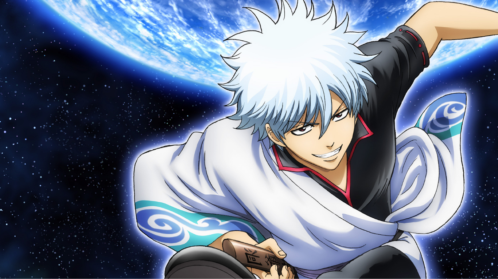

GINTAMA
9 / 10
The Amanto, aliens from outer space, have invaded Earth and taken over feudal Japan. As a result, a prohibition on swords has been established, and the samurai of Japan are treated with disregard as a consequence. However one man, Gintoki Sakata, still possesses the heart of the samurai, although from his love of sweets and work as a yorozuya, one might not expect it.
Studio : Sunrise
Type : TV Series
Release date : April 4, 2006